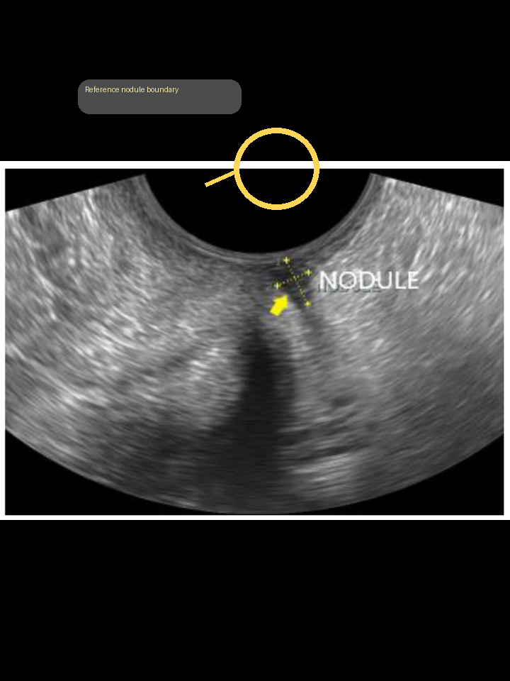

Case states
- Reviewed
- Pending review
- Rescan needed
- Low and moderate risk tagging
Specialist-facing routes in the app include inbox, viewer, structured report, e-prescription, and teleconsult workflows.

Use captured views, overlays, and confidence outputs to structure the next clinical step.